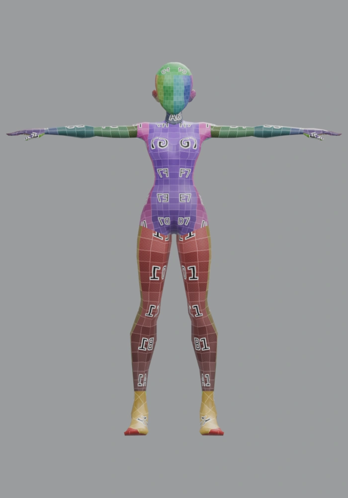
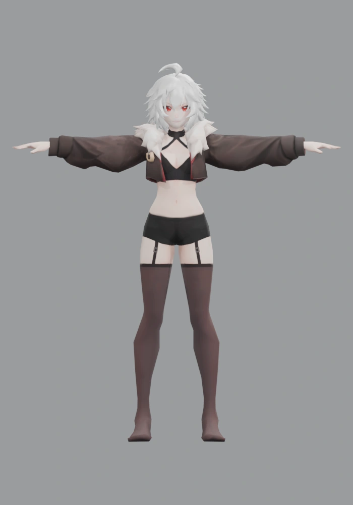
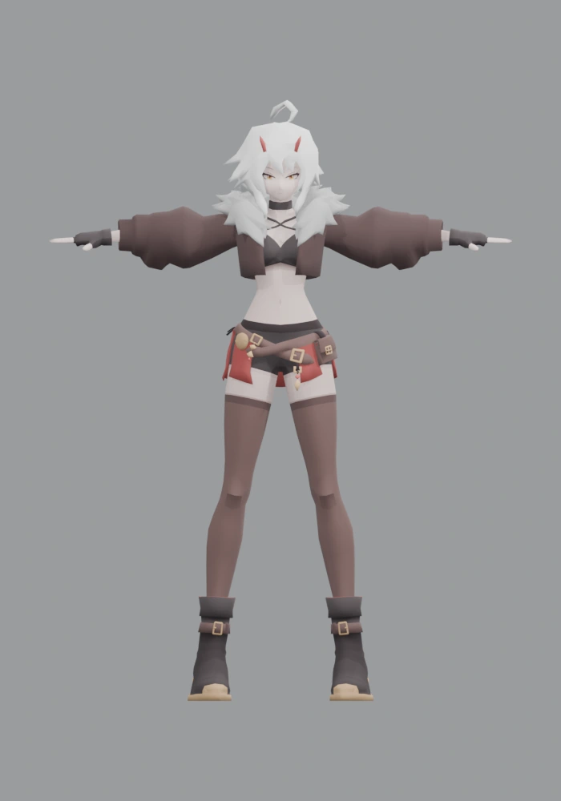
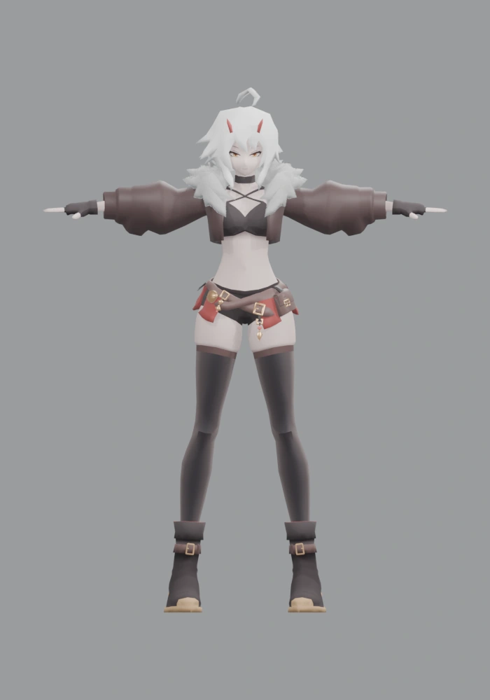
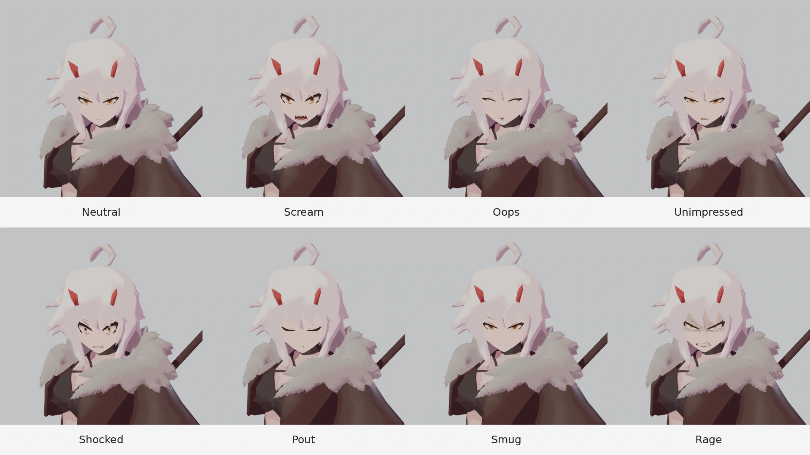
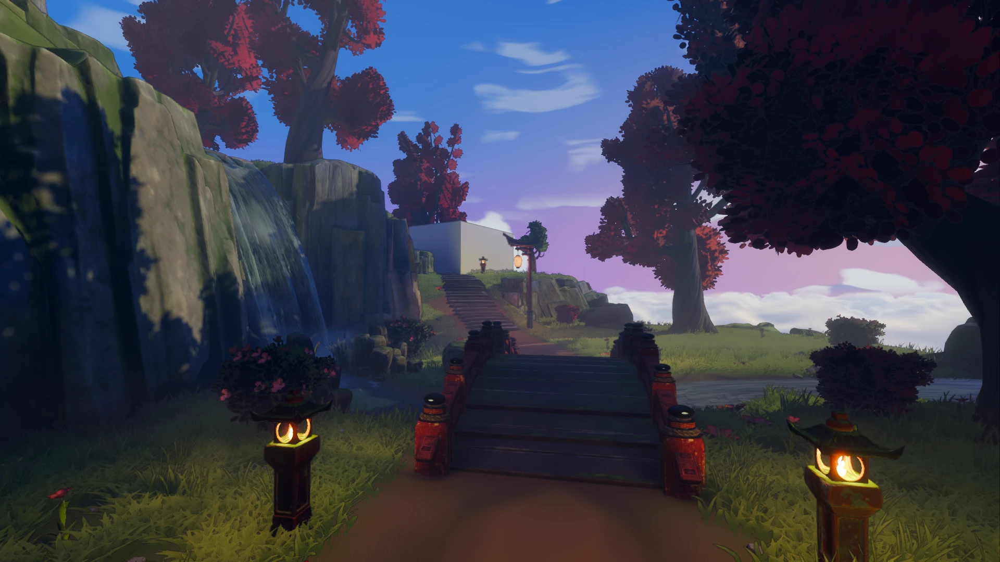
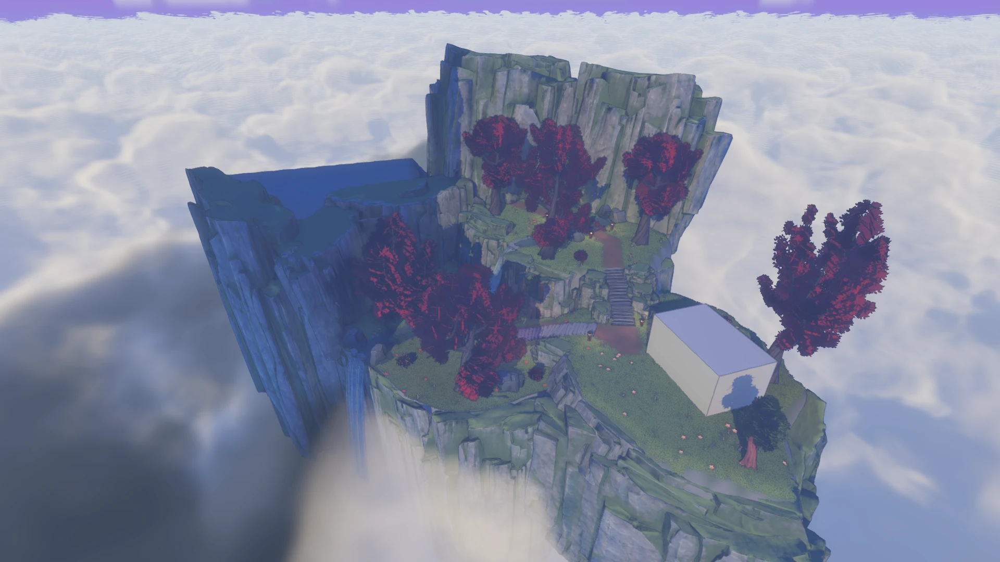
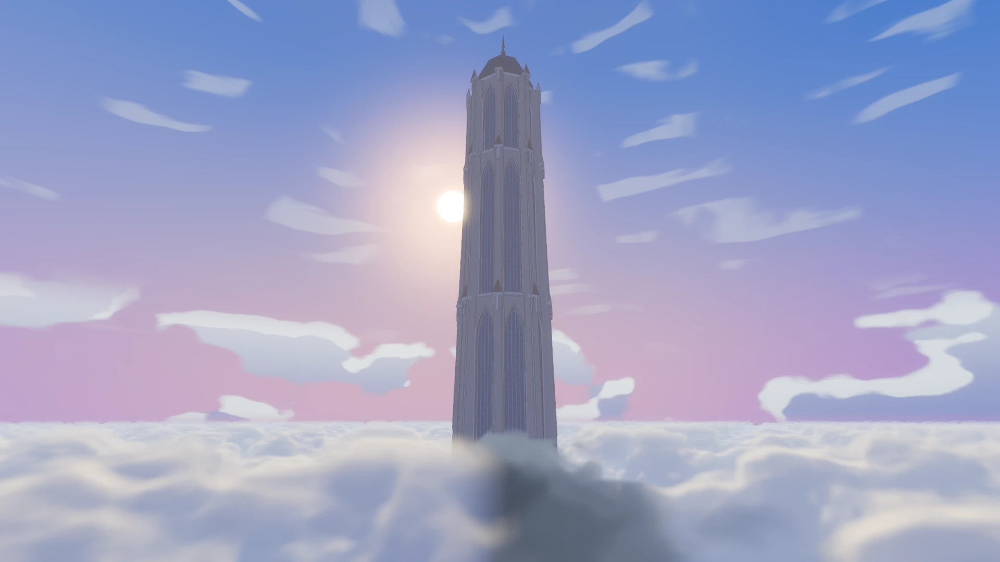
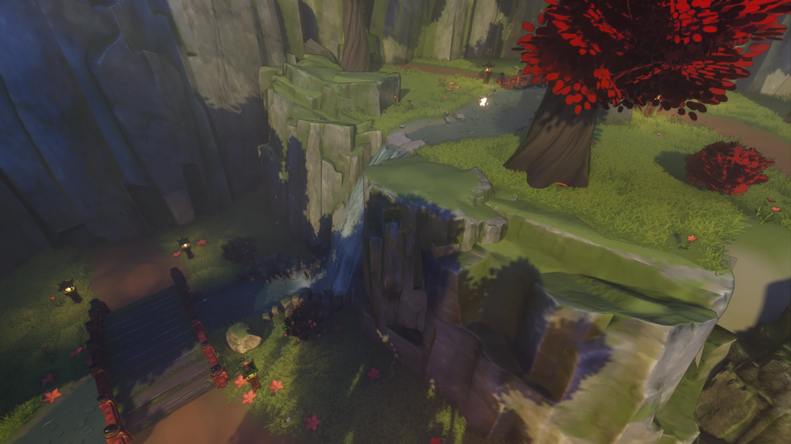
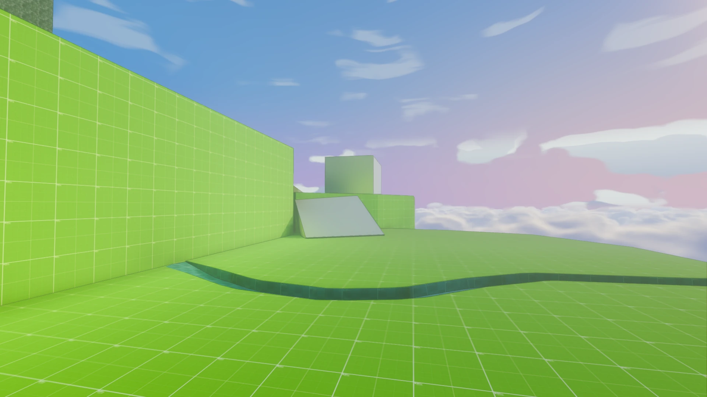

Luna
Personal character action project · In development
An ongoing prototype exploring scythe combat, character animation, and a stylized environment. Built in Godot, with Blender for the art workflow and Codex throughout development.
Character design
The first week was dedicated to Luna’s design. I generated the character in separate pieces with Tripo and assembled them in Blender. I then did the texturing myself, developing the palette and face artwork to give the different parts a consistent visual identity.
Character evolution








Rendered from the saved Blender files with their original materials, a shared frontal camera, rest pose, and neutral lighting. Display height is normalized for comparison. The dated stages come from the archived files and backup.
Facial expressions
Eyes and mouths use separate texture atlases, with eight variants each. Their selections can be mixed independently, giving 64 combinations on the same face mesh. The artwork remains editable, and expressions can change alongside animation.

Social pose
Combat
Light, heavy, and mixed combo routes, with animation-driven weapon collision, hitstop, trails, impact effects, and sound. Both clips were captured from the current project on 26 October 2026.
Current environment
Captured in the running game using Godot’s Forward+ renderer on 26 October 2026.






Blockout → current environment
The saved CSG blockout re-enabled for comparison with the current level. Camera position, orientation, field of view, and lighting are shared between each pair.

CurrentBlockoutDevelopment history
Earlier project revisions restored from Git and run in Godot. Each view uses the same camera across revisions; geometry, materials, lighting, and atmosphere come from the selected version.
Project notes
Luna is an ongoing personal prototype. I use coding agents to implement and revise systems, then evaluate gameplay and visuals in the engine. The project combines custom work with third-party assets, including purchased animation and environment packs.
Combat clips use scripted input sequences through the existing gameplay systems. Environment screenshots use fixed cameras. The blockout comparison uses the saved blockout nodes with current lighting; the Git comparison restores the historical project sources.